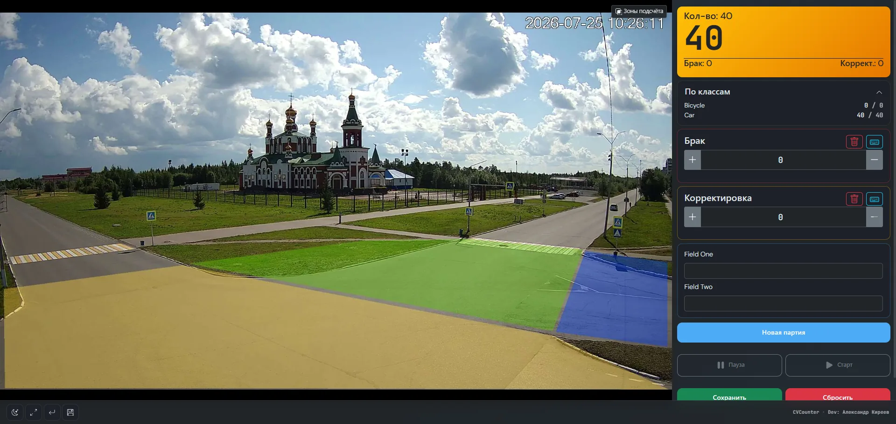
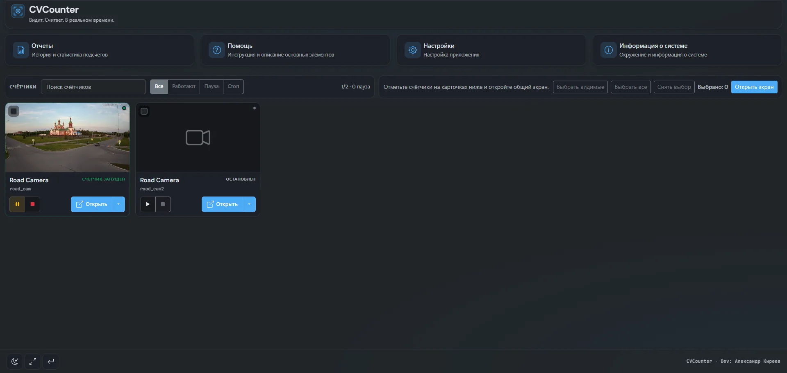
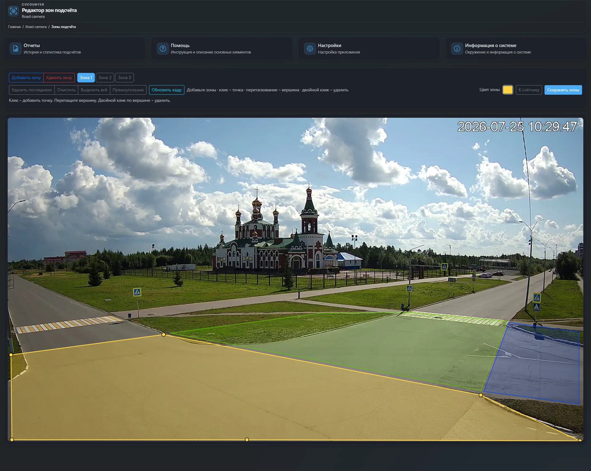
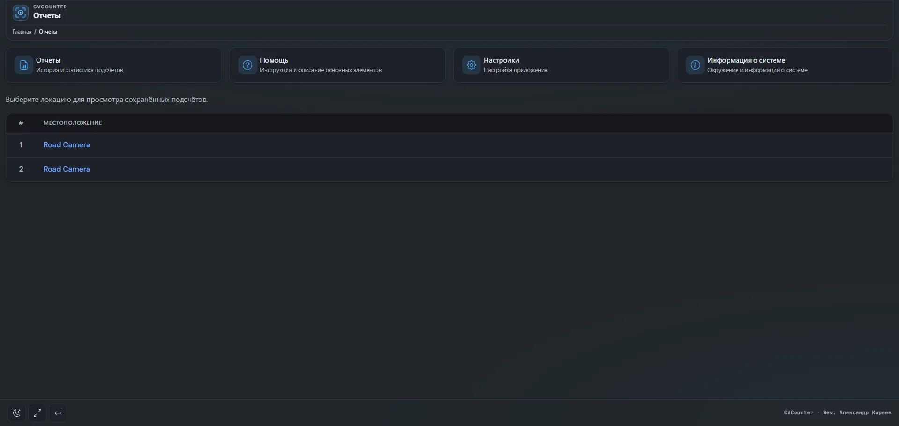

detect
Детекция в реальном времени
RTSP, веб-камера или файл. Автовыбор движка инференса.
Подсчёт объектов с камер: детекция, трекинг и зоны — на линии, складе или у входа. Клиентам достаточно браузера.
Подсчёт с камер без тяжёлого клиента — линия, склад, вход, только браузер.
RTSP, веб-камера или файл. Автовыбор движка инференса.
Надёжные ID между кадрами, меньше повторных срабатываний.
Полигоны и прямоугольники: нумерация вершин, зум и отмена действий.
Сбор кадров, разметка боксов и полигонов, обучение YOLO из веб-UI.
CUDA, DirectML, OpenVINO, TensorRT. Экспорт в ONNX и .engine в 1 клик.
Запись видео по детекции, печать A4 с подписями, экспорт аналитики.
Типовые сценарии — отдельные страницы под поисковые задачи.
RTSP-камера, USB/веб-камера или видеофайл.
YOLO, ONNX, OpenVINO, TensorRT или OpenCV.
Устойчивое присвоение ID объектам между кадрами.
Вход в зоны подсчёта с фильтрацией по классам.
Партии, журнал, запись видео и отчёты A4.
Что уже есть в готовом продукте, а не только в ноутбуке с моделью.
| Возможность | Скрипт YOLO | CVCounter |
|---|---|---|
| Веб-интерфейс и киоск | Нужно писать с нуля | Есть из коробки |
| Зоны подсчёта (полигоны) | Вручную координатами | Интерактивный редактор в UI |
| Трекинг объектов | Базовый или отсутствует | ByteTrack |
| Разметка и обучение моделей | Сторонние сервисы | Встроенный модуль в UI |
| Несколько счётчиков | Писать логику с нуля | Мульти-вид и сетка камер |
| Отчёты, фото и видео | Файлы на диске | Встроенная база + печать A4 |
| Бэкенды и аппаратное ускорение | Один фреймворк | ONNX, OpenVINO, TensorRT, YOLO |
| Автоустановка с детекцией GPU | Ручная настройка venv/CUDA | 1 клик (install.bat / install.sh) |
Flask-панель: счётчики, зоны, отчёты.





Да — конвейер, склад, цех. Подробнее на странице производства и склада.
RTSP, веб-камера и видеофайлы.
Желателен для высоких FPS (NVIDIA CUDA, AMD DirectML, Intel Arc / OpenVINO). CPU также поддерживается. Установщик сам определит оборудование.
Да, лицензия AGPL-3.0. Исходники на GitHub.
Версия 5.9.0. Исходники, скрипты автоустановки и Docker — на GitHub.